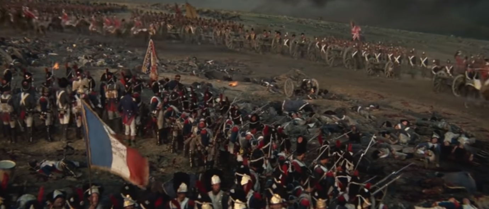
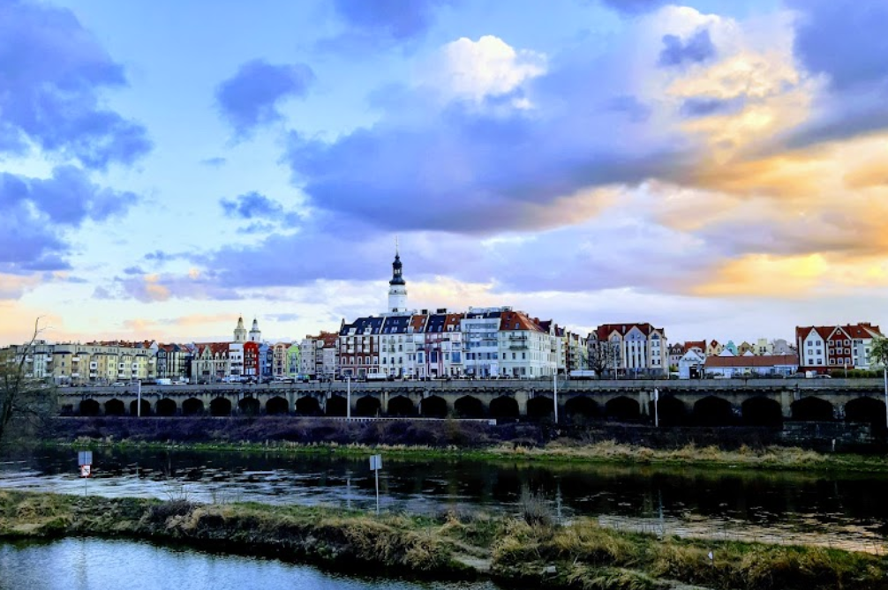
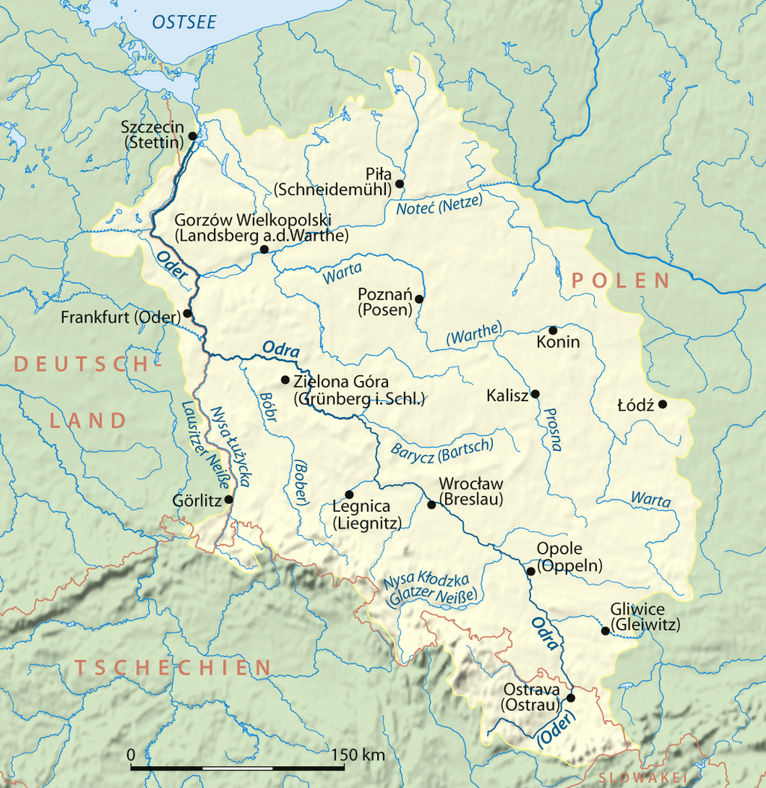
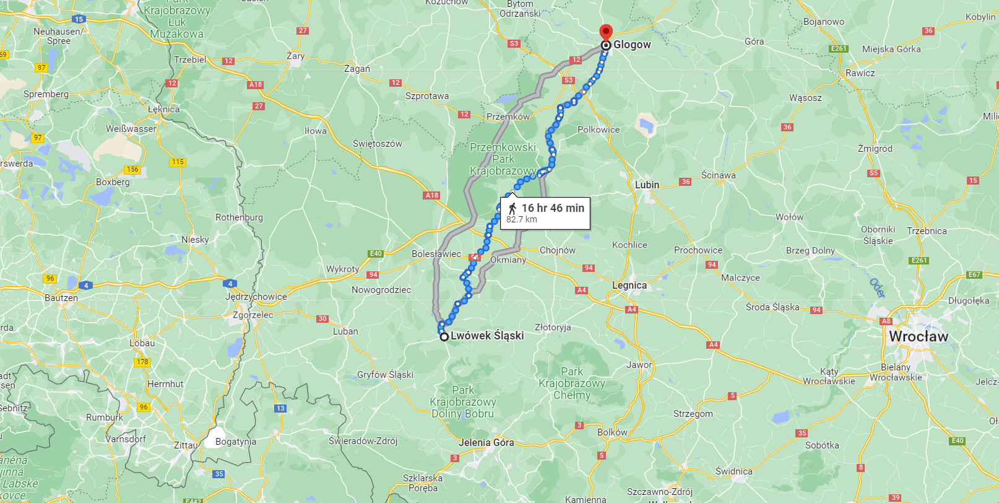
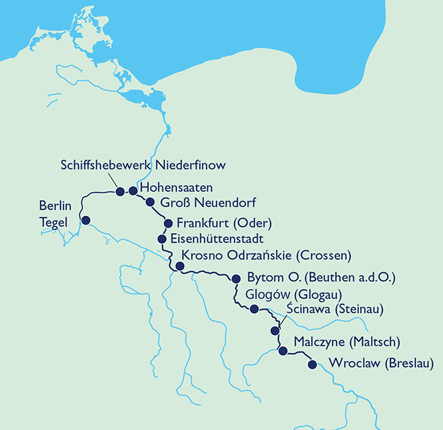

휴전 (1) - 나폴레옹의 축지법, 그게 될까?
게시: 2023-07-03T06:30:33+09:00
앞서 언급했듯이, 나폴레옹의 추격 작전은 기병대 부족으로 인해 심각한 지연을 겪고 있었습니다. 연합군은 후퇴하면서도 꽤 강력한 후위대를 남겨 두었는데, 주로 강력한 포병대와 기병대 위주로 구성된 연합군 후위대를 기병 없이 상대하는 것이 너무 어려웠기 때문이었습니다. 연합군 후위대는 주로 나지막한 언덕 위에 포병대를 방열하여 방어진을 구축했는데, 포병대 뿐이라면 추격하는 프랑스군이 별로 개의치 않고 쾌속으로 진격하여 제압했을 것입니다. 그러나 언제나 이런 포병대 옆에는 꽤 큰 규모의 기병대가 버티고 있었습니다. 원래 보병-포병-기병은 화수목금토 오행과 같은 상성을 가지고 있었습니다. 포병은 밀집 보병대를 상대로는 막강한 위력을 발휘했지만, 횡대로 얇고 길게 늘어서서 진격하는 보병대에게는 그다지 위협적인 존재가 아니었습니다. 그러나 횡대로 얇고 길게 늘어선 보병대는 칼을 꼬나쥐고 바람처럼 달려드는 기병대에게 그야말로 추풍낙엽 신세였습니다. 기병대에게 보병대가 저항하는 방법은 밀집 보병방진(infantry square)을 짜는 것이었으나, 이는 다시 포병에게 보울링핀 신세가 되었습니다. 그러다보니 프랑스군 추격대는 눈 앞에 적군을 보고도 포병대가 오기를 기다릴 수 밖에 없었습니다. 기껏 포병대가 도착해도, 포병들끼리 신나게 격전을 벌이다 프랑스군 보병대가 진격을 시작하면 기병대의 호위 하에 연합군 후위대는 짐을 싸서 후퇴했습니다. 그런데 이렇게 후퇴하더라도 바로 2~3km 뒤의 언덕에 또 똑같은 방어진을 치고 프랑스군의 추격을 기다렸습니다. 이런 지루한 헛짓거리를 반복해야 했던 프랑스군으로서는 정말 분통이 터지는 상황이었습니다.

(1970년 로드 슈타이거와 크리스토퍼 플럼머 주연의 스펙터클 영화 Waterloo 거의 끝장면입니다. 나폴레옹의 근위대가 패전 이후에도 영국 기병대에게 보병방진을 짠 채로 항복을 거부하자, 기병대가 물러나고 그 뒤에 기다리고 있던 대포들이 근위대에게 발포하는 장면입니다. 저 때 항복을 거부한 사람이 캄브론(Cambronne)으로서, 그는 흔히 "La garde meurt mais ne se rend pas!" (근위대는 죽을 뿐, 절대 항복하지 않는다)라고 말한 것으로 알려졌지만 실제로는 "Merde" (메흐드, 영어로 직역하면 정말 그냥 Shit)라고 했다고 합니다. 이 1970년 영화에서도 Merde라고 외치는 것으로 묘사됩니다.) 기병이 없어서 이렇게 추격이 지지부진한 것도 짜증나는 일이었지만 기병이 없다보니 정찰이 어렵고, 그래서 연합군이 어느 방향으로 후퇴 중인지를 알 수 없다는 사실은 메우 심각한 일이었습니다. 이런 식으로는 도저히 연합군을 따라잡는 것이 어려우니 나폴레옹으로서는 뭔가 큰 그림을 그려서 전략적으로 포석을 두어야 했는데, 적의 상황을 알 수 없으니 큰 그림 자체가 불가능했으니까요. 그래도 프랑스군에 말이 한 마리도 없는 것은 아니었고 또 여기저기에 심어둔 간첩 등을 통해서 부족하게나마 연합군 소식을 받을 수는 있었습니다. 그런 식으로 5월 24일 아침까지 들어온 보고에 따르면 나폴레옹의 기대와는 달리 프로이센군과 러시아군은 여전히 함께 움직이고 있었으며, 이들은 전통적인 러시아군 보급로인 분츨라우-브레슬라우-칼리쉬 경로를 따라 후퇴하려는 것으로 판단되었습니다. 이런 식으로는 폴란드 깊숙이 끝없이 후퇴하는 연합군 뒤를 뒤쫓는 1812년의 재판이라고 생각한 나폴레옹은 여기서 과감한 승부수를 고려했습니다. 그 승부수의 핵심은 오데르 강변의 요새도시 글로가우(Glogau)였습니다.

(글로가우, 폴란드식으로는 Głogów (그워구프)의 아름다운 모습입니다. 나폴레옹 당시 있었을 든든한 요새 방벽은 지금은 거의 다 사라지고 없습니다.) 큰 강은 언제나 중요한 군사적 장애물이자 수송로였습니다. 독일과 폴란드 사이의 자연 경계선이라고 할 수 있는 오데르 강은 저 남쪽 보헤미아의 오데르 산맥(체코어로는 Oderské vrchy)에서 발원하는 큰 강으로서 북서쪽을 향해 비스듬하게 기울어져 흘렀습니다. 연합군이 1차 목표물로 향하고 있을 슐레지엔의 수도 브레슬라우도 바로 오데르 강변에 자리잡은 도시였습니다. 당시 프랑스군의 위치는 브레슬라우까지의 거리보다는 북쪽 글로가우까지의 거리가 더 짧았습니다.

(오데르 강은 보헤미아에서 시작하여 Stettin(슈테틴), 현재의 Szczecin(슈쳬친)으로 흘러 들어갑니다.) 이런 지리적 특성에 주목한 나폴레옹은 일부 병력을 글로가우로 보내기로 합니다. 그렇게 하면 후퇴하는 연합군보다 먼저 오데르 강에 도착하는 셈이 되고, 그 소식은 연합군에게 분명히 심리적 그리고 실질적인 위협을 줄 것이라고 생각한 것입니다. 글로가우에 주둔한 약 9천의 프랑스군은 1813년 초부터 러시아군의 포위에 버티고 있었는데, 여기에 병력을 파견하여 오데르 강을 건넌 뒤 강을 따라 적 후위대의 방해 없이 손쉽게 남하하면 연합군을 따라잡을 수 있다는 계산이 섰습니다. 아무래도 브레슬라우는 프로이센군의 근거지이자 사실상의 임시 수도였으므로 연합군은 그 도시에서 적어도 2~3일은 버틸 것이기 때문이었습니다.

(뢰벤베르크(Löwenberg, 폴란드식으로 Lwówek Śląski(르부벡 슬롱스키)에서 글로가우까지의 거리가 확실히 브레슬라우 (폴란드식으로 Wrocław, 브로츠워프)보다 더 가깝습니다.)

(오데르 강변의 주요 도시들입니다. 브레슬라우와 글로가우를 찾아보십시요.) 이런 계산에 따라 나폴레옹은 프랑스군 우익을 리그니츠(Liegnitz)로 보내어 브레슬라우를 위협함으로써 연합군을 그 곳에 묶어두고 빅토르의 제2 군단을 글로가우를 향해 북상시켰습니다. 거기에서 그치지 않고 우디노의 제12 군단을 다소 엉뚱하게 북서쪽의 호이어스베르다로 보냈습니다. 호이어스베르다는 바우첸 전투 직전 네의 군단들이 거쳐 내려온 마을이었습니다. 이는 우디노를 북상시켜 뷜로(Friedrich Wilhelm Freiherr von Bülow)의 작은 프로이센 군단을 밀어내고 베를린을 함락시켜 프로이센군을 동요시키기 위함이었습니다. 이건 오데르 강을 이용해서 일종의 축지법을 쓰겠다는 작전이었는데, 이게 과연 그럴싸한 작전이었을까요? 이는 바우첸 전투 직전 베를린을 위협하면서 동시에 연합군의 퇴로를 차단하기 위해 네의 군단들을 크게 북쪽으로 우회시켜 엘베 강을 건넜던 것의 재방송이라고 할 수 있었습니다. 그 결과는 역시 보병으로 기병을 대체할 수는 없다는 뼈저린 꺠달음 뿐이었습니다. 왜 나폴레옹은 똑같은 실수를 반복하려는 것이었을까요? 이번에는 강변을 따라 신속하게 행군할 것이므로 이번에는 다를 것이라는 기대도 있었겠습니다만, 도저히 다른 수가 없었기 때문이기도 했습니다. 이런 상황 속에서 작다면 작고 크다면 큰 일이 발생합니다. 5월 24일, 카이사로프(Paisii Sergeevich Kaisarov) 장군이 지휘하는 러시아 유격부대(Streifkorps)가 괴를리츠(Görlitz)와 라이헨바흐(Reichenbach) 사이에서 나폴레옹 사령부의 수송마차 행렬을 습격한 것입니다. 주로 코삭 기병들로 구성된 이 부대는 베스트팔렌 병사들로 구성된 1개 중대의 보병과 2문의 포병대를 가볍게 제압하고 대포들과 나폴레옹이 사용하던 각종 가재도구 등을 끌고 가버렸습니다. 그나마 뒤록의 시신을 드레스덴으로 운구하던 근위대 보병 2개 중대가 운좋게 현장에 딱 나타나지 않았다면 모든 짐마차를 다 강탈당할 뻔할 정도로 코삭 기병대는 거침없이 프랑스군의 후방을 유린하고 있었던 것입니다. 이 사건으로 나폴레옹은 자신의 연락망이 얼마나 취약한지 깨달았습니다. 기억하시겠지만 나폴레옹이 원래는 1812년 겨울을 모스크바에서 나려고 했었으나 파리와의 연락망이 코삭 기병대에 의해 유린되는 것에 위협을 느끼고 철군을 결정한 바 있었을 정도로, 나폴레옹은 후방과의 연락망을 매우 중시했습니다. 나폴레옹은 이 사건 직후 에르푸르트 동쪽의 모든 곳, 그러니까 최전선에서 400km 떨어진 후방에서도 모든 수송대는 최소 1천의 호위대와 함께 움직일 것을 명령할 정도로 위축되었습니다.


(카이사로프 장군입니다. 1783년 생으로서 당시 불과 30세의 나이였던 그는 가난한 귀족 집안 출신이었는데 전해지는 바로는 그의 집안은 원래 러시아를 침공한 몽골 부족 출신이라고 합니다. 14세부터 소위로 임관하면서 군생활을 시작했지만 역시 가난한 집안 출신이라서 그런지 승진은 되지 않았습니다. 그러다 역시 뺵 없이는 러시아군에서 비전이 없다고 생각했는지 1805년 초 장교직을 사임하고 공무원이 되었으나, 나폴레옹 전쟁으로 인해 곧 다시 임관하여 1805년 아우스테를리츠 전투에 참전했다가 큰 부상을 입었습니다. 이때부터 승진이 잘 되었습니다. 바로 몇 달 후에 중위가 되어 남쪽 오스만 투르크 전선으로 배치되었고, 불과 6년 만인 1811년에는 대령까지 진급했습니다. 가장 큰 행운은 그 오스만 투크르 전선에서 쿠투조프의 참모가 되었다는 것이었습니다. 그는 쿠투조프 바로 옆에서 보로디노 전투를 치렀고, 1813년 3월에 소장까지 진급합니다. 이때 즈음 쿠투조프가 병사했고, 이후로는 승진이 되지 않았습니다. 그가 중장으로 승진한 것은 무려 13년이 지난 1826년이었지만, 가늘고 길게 1842년까지 장군으로 복무했고 58세에 건강이 심각하게 나빠져서야 전역했습니다. 그는 불과 2년 뒤 요양차 갔던 프랑스 니스에서 사망합니다.) 그리고 이 때문인지 나폴레옹은 5월 26일, 사람들이 생각하지 않았던 카드를 꺼내듭니다. 그건 무엇이었을까요? Source : The Life of Napoleon Bonaparte, by William Milligan Sloane Napoleon and the Struggle for Germany, by Leggiere, Michael V https://en.wikipedia.org/wiki/Oder https://goo.gl/maps/9XVpxP4iyyHhPqj96 https://youtu.be/3DcWJrzK0wU https://en.wikipedia.org/wiki/Paisi_Kaysarov